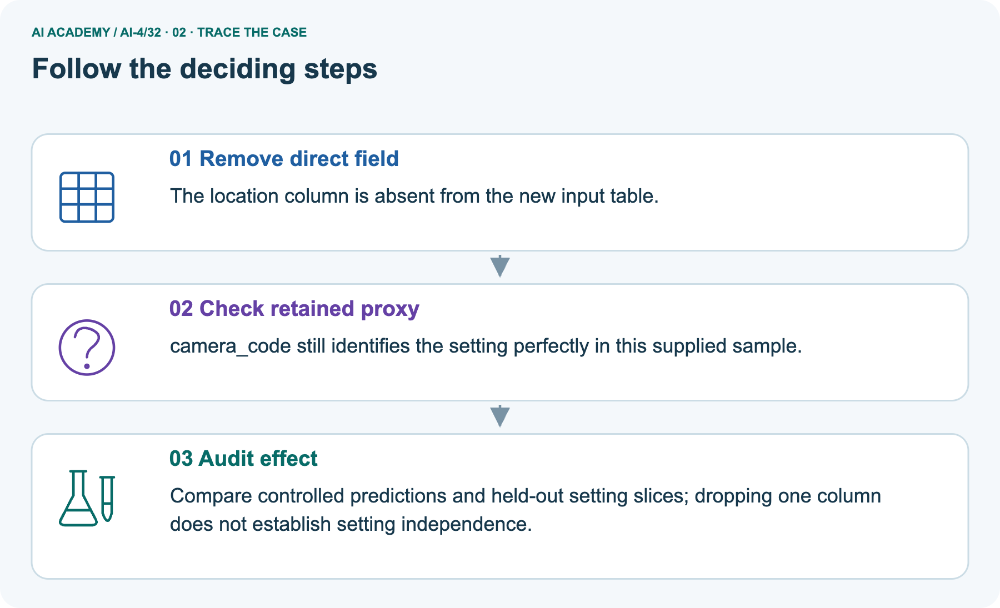
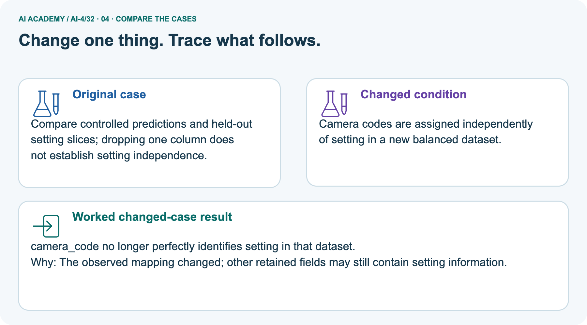
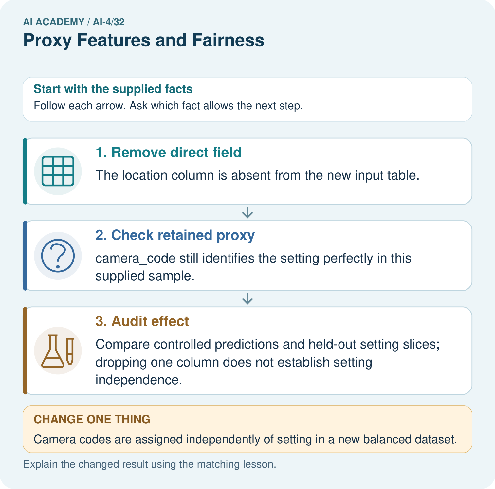
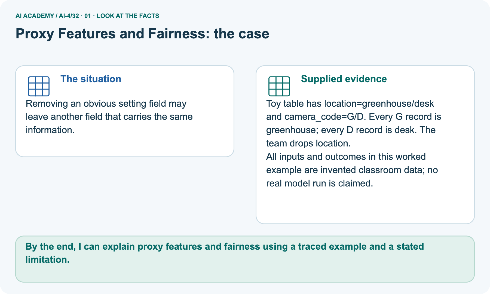
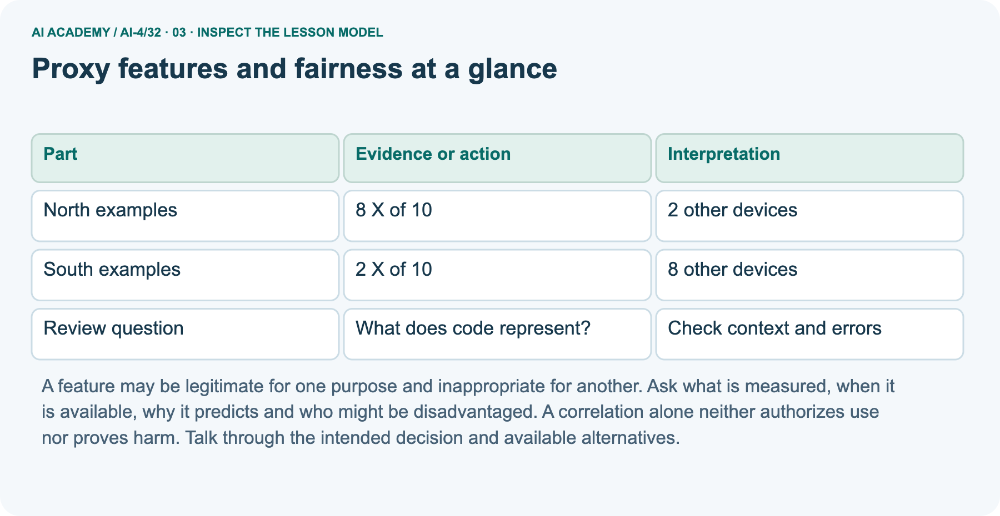

AI Academy · Level 4 · Grade 9 · Week 32 · Student lesson
Proxy Features and Fairness
Learn to understand, design, build, test and explain AI systems responsibly.
Project: Responsible Plant Classifier
THE CONNECTED WEEK
Trace the origin. Test the behavior. Keep the context.
Investigate proxy information without mistaking one deletion or equal accuracy for a complete fairness result.
Keep one habit: Complete association table → pictured mapping → full paired ablation → utility/recall comparison → independent new claim.
Main lesson · Section 1
Which retained input still carries related information?
A missing direct column does not establish independence or fairness.
Learning goals
I can identify possible proxy features.
I can explain why removing one field does not guarantee fairness.
I can propose a contextual review with concrete evidence.
Recall the limits of equal overall scores
Close your notes first. A rough first answer helps us choose the right starting point; it is not a score for your ability.
Without opening the old lesson, explain one key idea from Subgroup Performance. Give an example and a mistake that the idea helps you avoid.
Without opening the old lesson, explain one key idea from Feature Engineering. Give an example and a mistake that the idea helps you avoid.
Without opening the old lesson, explain one key idea from Reproducible Experiments. Give an example and a mistake that the idea helps you avoid.
Does equal overall accuracy prove fair treatment?
End goal
By the end, I can explain proxy features and fairness using a traced example and a stated limitation.
Earlier wording, alternatives and picture transcripts
Your learning target
Remember before reading
After trying, check the relevant lesson or ask your teacher. Change the part of your explanation that the evidence shows was wrong.
A feature may indirectly encode sensitive identity or context, creating unjustified differences even when the original field is absent.

LEARNING TARGET A leaf model performs well using location ID alone. Explain a possible proxy problem and design a diagnostic evaluation.
Builder name and experiment date:
Readiness for the connected explanation
This week’s end goal
Main lesson · Section 2
Trace feature origins and context before judging a proxy
An association can create a risk without proving harm or a particular identity.
Proxy explanation and fictional-only scope
An input can carry information about a characteristic without naming it. In a fictional school-device dataset, device code may be associated with building or access to newer equipment.
Removing a building field does not remove all related information. Do not infer a real student identity or protected characteristic in this exercise.
Use fictional classroom data throughout this investigation. Keep the task, units, reference labels and data split visible as you reason.
Earlier weeks supplied the model-building process; this week examines proxy features and fairness.
Earlier wording, alternatives and picture transcripts
PICTURE ENTRY
Notice → Predict → Explain
Begin with visible evidence; do not explain more than the picture and information support.
MYSTERY The team must use proxy features and fairness to solve a model-building problem. What information do they have? What important evidence is still missing?
Name three visible details without interpreting them.
Predict the data, model, or evaluation decision being made.
Identify one hidden assumption that could change the result.
State what evidence would confirm or reject your prediction.
My prediction and supporting evidence:
A closer explanation
Main lesson · Section 3
Read the association and its counterexamples
A field can be informative without being a perfect identifier.
Complete association counts
| Complete fictional association table | DeviceX | Other device | Total |
|---|---|---|---|
| North building | 8 | 2 | 10 |
| South building | 2 | 8 | 10 |
| Total | 10 | 10 | 20 |
Fictional records show device code X on 8 of 10 north-building examples and 2 of 10 south-building examples. Device and building are associated in this sample.
This does not prove device causes model errors or that every X device comes from north. The remaining cases contradict such a universal rule.
Explain what follows and what does not
The table supports P(X|north)=8/10 and P(X|south)=2/10in this supplied sample. It does not say every Xdevice is north:2Xrecords are south. Removing building leaves device-related association, not a proved causal model effect. These building/device records do not authorize inference of a real learner’s identity or protected characteristic.
The separate executable plant-card ablation below supplies actual toy prediction behavior and its own data.
Before continuing, underline the decision rule and circle the evidence that supports the conclusion. Explain the example to a partner without replacing the counts or conditions with a stronger claim.
Keep the distinction between an observed result and a proposed next step.
Earlier wording, alternatives and picture transcripts
ML MECHANISM
Input → Model → Evidence
Trace the information, fitted behavior, and evaluation proof separately.


QUESTION Trace suspicious proxies and compare model behavior after a controlled removal.
MODEL IDEA A feature may indirectly encode sensitive identity or context, creating unjustified differences even when the original field is absent.
PROOF NEEDED Use an unseen case, visible calculation, error analysis, and a stated limitation.
UNDER THE HOOD Photo background predicts classroom location and is correlated with camera quality. Model uses background as a shortcut for health labels.
Draw a fresh data → model → prediction → evaluation trace:
A closer explanation
Connect the picture and the explanation
Point to the input, the deciding step and the result in this week’s visual. Explain the same step in ordinary words. A picture helps when you can say what each part represents.
Main lesson · Section 4
Compare dropping a direct field with removing all related information
Actual task relevance,consequences and model behavior still need evidence.
Four evaluation conditions

NORMAL Expected data and expected behavior.

Keep this boundary clear
BOUNDARY Value close to a threshold, ambiguous label, or uncertain prediction.

MISSING Necessary field, label, source, or measurement is unavailable.

SHIFTED New lighting, species, device, subgroup, or time condition.
Keep the claim bounded
RELEASE RULE Passing one case never proves generalization. Predefine expected behavior for all four categories.
Choose a revealing case
Which case most threatens today's claim, and why?
Predict the supplied changed case
Change: Camera codes are assigned independently of setting in a new balanced dataset.
Check after predicting
Prediction: camera_code no longer perfectly identifies setting in that dataset.
Reason: The observed mapping changed; other retained fields may still contain setting information.
Earlier wording, alternatives and picture transcripts
EVALUATION DESIGN
Four Tests, Four Kinds of Evidence
A system is not understood until it survives more than one comfortable example.
NORMAL Expected data and expected behavior.
BOUNDARY Value close to a threshold, ambiguous label, or uncertain prediction.
MISSING Necessary field, label, source, or measurement is unavailable.
SHIFTED New lighting, species, device, subgroup, or time condition.
Change one thing in the pictured case
Main lesson · Section 6
Trace retained information after a direct field is removed
Keep the original dataset and changed association record separate.
Complete pictured mapping and separate-fixture scope
Removing an obvious setting field may leave another field that carries the same information.
Toy table has location=greenhouse/desk and camera_code=G/D. Every G record is greenhouse; every D record is desk. The team drops location.
All inputs and outcomes in this worked example are invented classroom data; no real model run is claimed.
The picture’s original toy mapping is perfect:cameraGidentifies greenhouse and cameraDdesk in that supplied dataset, even after location is dropped. The main North/Southassociation is only 8/10 versus2/10, not perfect. A new balanced crossed camera/setting dataset breaks the old one-to-one mapping, but that does not prove every other retained field is independent of setting.
The complete ablation trial below intentionally retains room_hintas another setting proxy; its constructed marker/label relation is not a real diagnostic or fairness result.
Trace direct-field removal,retained proxy and audit



Read the picture one step at a time
Read the picture in order. Compare controlled predictions and held-out setting slices; dropping one column does not establish setting independence.
The arrows show which recorded input or intermediate result each decision uses. Explain the deciding step aloud before checking the changed case; pointing to the final answer alone does not show how it follows.
Predict crossed camera codes in a new balanced dataset
Change one thing: Camera codes are assigned independently of setting in a new balanced dataset. Predict the result before checking the explanation. What remains the same?
Check after predicting



Explain task relevance and remaining-proxy limits
A correlated field is not necessarily harmful in every use; assess task relevance, consequences and actual model behaviour.
Read the labelled picture: What evidence contradicts the original “all setting information removed” claim? Point to the relevant step in the picture, then write the changed result and the rule or evidence that supports it.
Return to the main indirect-information question
Proxy features and fairness at a glance
Earlier wording, alternatives and picture transcripts
WORKED EVIDENCE
Reason Step by Step
Predict first. Then check each step. A correct answer without visible evidence cannot be audited.

STEP 1 Photo background predicts classroom location and is correlated with camera quality.
STEP 2 Model uses background as a shortcut for health labels.
STEP 3 Create paired crops with the same leaf and different backgrounds; predictions change.
STEP 4 Crop backgrounds or improve data, retrain, and compare performance and subgroup gaps.
CHECK Verify the denominator, unit, split, class definition, and data version before interpreting a score.
Recalculate, retrace, or restate the evidence independently:
A closer explanation
Learn from the worked case
Cover the result before checking it. Say what is given, choose the procedure, and follow one step at a time. Then uncover the result and explain your first mismatch. Ask why a step is allowed, not only what number it produces.
A pictorial worked case: Proxy Features and Fairness
The facts we will use



Why this result follows
What this example does not establish
Main lesson · Section 7
Find one field deletion used as a fairness guarantee
Ask which information remains and which consequences were actually measured.
Diagnose the claim
Diagnose one cause and name the cleanest next experiment:
CLAIM TO CHALLENGE Removing a sensitive column guarantees the model cannot use related information.
Explain evidence and next-test limits
Do not advertise fairness through unawareness merely because names or a sensitive field were removed. A classroom audit should state unresolved questions, intended non-use and a human review path.
Never collect sensitive student information simply to fill this exercise.
Earlier wording, alternatives and picture transcripts
ERROR DETECTIVE
Compare → Diagnose → Repair
Do not patch the answer. Find the earliest unsupported assumption, data problem, or experiment error.

| Evidence record | Expected | Actual | Likely cause / next test |
|---|---|---|---|
| normal case | passes | ||
| boundary case | defined behavior | ||
| missing case | safe fallback | ||
| shifted case | measured limit |
A closer explanation
Main lesson · Section 8
Practise a controlled ablation with less help
Compare the same cases and error types,not only a new overall score.
Try supported proxy-risk W2
Use workbook W2 for the connected example “Proxy features and fairness”. First fill the input and rule boxes. Try the middle steps before asking for a hint. After a hint, try the next step yourself.
| Plan | Do | Check |
|---|---|---|
| What is given? Which rule or procedure applies? | Record each intermediate step. | Does the result follow? What remains unknown? |
Explain your trace to a partner. Your partner points to one step to check. Swap roles on the next case. Each person writes their own explanation.
Record ablation versions,groups and retained correlations
Compare versions with and without device code on the same validation cases, while checking subgroup errors and useful task performance.
This ablation measures a change in that experiment; correlated inputs may still carry similar information. Retain group definitions and denominators, and avoid using the final test for repeated feature decisions.
Explain the evidence behind the claim
Use the worked case for Proxy features and fairness. Proposed explanation: “A final answer is enough”. Decide whether this explanation is supported.
Point to the step or supplied fact that decides; explain your repair if needed.
Answer on your own before discussion. If you are unsure, say which step you need help with.
Explain the pictured retained setting information
What evidence contradicts the original “all setting information removed” claim? Point to the relevant step in the picture, then write the changed result and the rule or evidence that supports it.
Reserve the independent postcode/school-code task
This is supported practice. Keep the separately named independent case for an attempt before feedback.
Earlier wording, alternatives and picture transcripts
ML STUDIO
Specify Before You Run
A trustworthy result can be reproduced from the recorded data, code, settings, and evaluation rule.

Experiment record
QUESTION + intended use + success threshold
DATA version + grouped split + leakage check
CODE/preprocessing + features + model + settings + seed
METRICS + positive class + units + denominators
PREDICTIONS + errors + subgroup slices + limitations
HUMAN reviewer + release, revise, limit, or stop decision
Write the minimum record needed to reproduce today's result:
A closer explanation
Practise with less help: Find a proxy risk
Check your reasoning
Explain the picture
Main lesson · Section 9
Run a complete paired-test and proxy-ablation exercise
Every input origin,training row and old/new prediction needed for the comparison is supplied.
Complete feature-origin and learner contract
| Toy feature or audit field | Complete origin and role |
|---|---|
| setting | Greenhouse/desk audit metadata; not a model candidate in either version. |
| camera_code | BinaryG=1/D=0; perfectly tracks setting and label in the four original training records. |
| room_hint | Binarygreenhouse1/desk 0; another retained setting-related field. |
| marker | Available synthetic leaf-marker bit; perfectly matches the toy spotted label by construction. Not a real disease feature. |
| candidate/tie rule | V1 camera_code, room_hint, marker; V2 removes camera_code. Predict positive iff chosen bit 1; minimize training mistakes, first candidate wins ties. |
Complete original training rows
| Training plant | Setting | Camera bit | Room hint | Marker | Toy positive label |
|---|---|---|---|---|---|
| T1 | greenhouse | 1 | 1 | 1 | 1 |
| T2 | greenhouse | 1 | 1 | 1 | 1 |
| T3 | desk | 0 | 0 | 0 | 0 |
| T4 | desk | 0 | 0 | 0 | 0 |
Complete eight paired validation views
| Validation view / plant | Setting | Camera | Room hint | Marker / reference | V1 prediction | V2 prediction |
|---|---|---|---|---|---|---|
| P1-greenhouse-1 | greenhouse | 1 | 1 | 1 /1 | 1 | 1 |
| P1-greenhouse-0 | greenhouse | 0 | 1 | 1 /1 | 0 | 1 |
| P1-desk-1 | desk | 1 | 0 | 1 /1 | 1 | 0 |
| P1-desk-0 | desk | 0 | 0 | 1 /1 | 0 | 0 |
| P2-greenhouse-1 | greenhouse | 1 | 1 | 0 /0 | 1 | 1 |
| P2-greenhouse-0 | greenhouse | 0 | 1 | 0 /0 | 0 | 1 |
| P2-desk-1 | desk | 1 | 0 | 0 /0 | 1 | 0 |
| P2-desk-0 | desk | 0 | 0 | 0 /0 | 0 | 0 |
Derive,ablate,compare and bound the claim
Proxy Detective: map the field origins, derive the tied training fits, and compare all eight paired validation outputs before running the optional complete program. State four views per plant, two new plants, and the setting-specific recall denominators. Remove only camera_codewith the other learner/data rules fixed, and explain why room_hintstill matters.
Record missing real-world context, consequence definitions and other potential proxies rather than declaring a universal fairness score. Keep the selected postcode/school-code scenario for an uncoached first evidence request.
Checked behavior and subgroup results
Fit each version on the same four original training plants. All candidate training errors are 0, so V1 chooses camera_codeand V2 chooses retained room_hint. The eight validation views cross both cameras with both settings for each of two new plants P1/P2; related views stay together outside training. Overall correctness remains 4/8 for both versions.
V1 recall is1/2in each setting; V2 recall is2/2in greenhouse and 0/2at desk. Same overall accuracy does not imply identical errors or a fairness conclusion. The toy learner is fully specified; the marker’s perfect relation is constructed, not a real model guarantee.
Normal,paired,single-ablation and missing-context probes
| Complete proxy probe | Expected bounded check |
|---|---|
| Normal main North/Southtable | DeviceX80%/20%, with counterexamples; association does not prove causal errors. |
| Paired toy P1 greenhouse views, camera 1 then0, room/marker held 1 | V1 changes positive→negative; V2 stayspositive because it selects room_hint. This is a specified-input diagnostic, not a real observed human outcome. |
| Single ablation camera removed | V2 still uses setting-related room_hint; overall 4/8 does not certify independence. |
| Missing feature provenance or actual consequence evidence | Request/record the gap; do not invent identity, harm or fair-treatment proof. |
Optional complete constrained ablation program
# All values are synthetic. setting is audit metadata, absent from candidates.
training = []
for item_id, bit in [('T1', 1), ('T2', 1), ('T3', 0), ('T4', 0)]:
training.append({'id': item_id, 'setting': 'greenhouse' if bit else 'desk',
'camera_code': bit, 'room_hint': bit, 'marker': bit, 'actual': bit})
validation = []
for plant, marker in [('P1', 1), ('P2', 0)]:
for setting, room in [('greenhouse', 1), ('desk', 0)]:
for camera in [1, 0]:
validation.append({'id': f'{plant}-{setting}-{camera}', 'plant': plant,
'setting': setting, 'camera_code': camera,
'room_hint': room, 'marker': marker, 'actual': marker})
def fit_feature(rows, candidates):
if not rows or not candidates:
raise ValueError('Need training records and declared candidate inputs')
errors = [sum(r[name] != r['actual'] for r in rows) for name in candidates]
winner = min(range(len(candidates)), key=lambda i: errors[i])
return candidates[winner], errors
def report(rows, predictions):
if len(rows) != len(predictions):
raise ValueError('Need same-case paired predictions')
correct = sum(r['actual'] == p for r, p in zip(rows, predictions))
positives = sum(r['actual'] == 1 for r in rows)
found = sum(r['actual'] == p == 1 for r, p in zip(rows, predictions))
return correct, len(rows), found, positives
for version, candidates in [('V1', ['camera_code', 'room_hint', 'marker']),
('V2-camera-removed', ['room_hint', 'marker'])]:
feature, errors = fit_feature(training, candidates)
predictions = [r[feature] for r in validation]
print(version, feature, errors, report(validation, predictions))
for setting in ['greenhouse', 'desk']:
subset = [r for r in validation if r['setting'] == setting]
print(setting, report(subset, [r[feature] for r in subset]))
# Fixed rule: predict positive iff chosen binary input is1; first candidate wins ties.
# V2 removes camera but still selects room_hint, a setting proxy in this toy sample.
# Two new plant identities/four views each; no model of real fairness or disease.
Keep evidence and execution status
| Case | Prediction | Actual | Calculation / evidence | Meaning / next test |
|---|---|---|---|---|
| Normal | ||||
| Boundary | ||||
| Missing | ||||
| Shifted |
Before trying: what do I expect, and why? While trying: which step could first go wrong? Afterwards: what did I actually observe, and what should change? Keep “not run” if you only traced the procedure.
Earlier wording, alternatives and picture transcripts
EVIDENCE LAB
Predict → Run → Calculate → Interpret
Keep the test conditions fixed, record every result, and change only one planned factor.

1. Write the hypothesis and expected evidence before running.
2. Proxy Detective: map feature origins, run paired tests, remove one suspicious feature, and check both utility and gaps.
3. Run one normal, one boundary, one missing, and one shifted case.
4. Calculate the metric from raw counts or row-level errors.
5. Interpret what changed, what did not, and what remains unsafe or unknown.
Plan → try → check
Main lesson · Section 14
Try alone: evaluate a new retained-information claim
Request the evidence needed rather than inventing a proxy mapping.
Complete independent scenario and scope
A team removes postcode but retains school code and claims all location-related information is gone. Evaluate the claim and request evidence.
The selected postcode/school-code task gives a claimed removal, not actual association counts, model predictions or a mapping. Do not infer any real student’s location or identity. State the unsupported part, request provenance/association/context evidence, and propose matched ablations and group error checks. No automatic fairness or complete-removal result follows without those observations.
First attempt and support record
Attempt this case before feedback. Record any help. Earlier examples below are further practice; a case already practised with feedback cannot establish fresh transfer.
Your teacher has the independent answer and scoring criteria. Complete the matching workbook week to keep your practice evidence together.
Use feedback after trying
Attempt the independent case before hints. Record whether you worked alone, used a hint or followed a model. After feedback, fix the first unsupported step and explain why it changed.
A later check uses a changed case, not a copied answer.
Earlier wording, alternatives and picture transcripts
Independent case: Apply independently
Week 32 Independent application
Close the worked explanation. Apply the idea to this different question without copying.
A plant classifier uses camera_model, and one species was photographed mostly on a single camera. What shortcut might it learn and how could you investigate?
My answer, with a trace, calculation or supporting evidence
Create and test
Change one relevant detail. Predict the result before testing. Include a boundary or missing-information case when it helps reveal a limit.
My changed input and expected result
Connect to your project
Document Plant Classifier proxy risks, paired-test evidence, mitigation, and remaining fairness limitation.
The evidence I will keep
Transfer practice from the original programme
A leaf model performs well using location ID alone. Explain a possible proxy problem and design a diagnostic evaluation.
Use feedback to improve
Main lesson · Section 11
Keep proxy risks and unresolved context in the project record
A mitigation claim should name what changed and what remains untested.
Project artifact and evidence
THIS WEEK'S CHECKPOINT Document Plant Classifier proxy risks, paired-test evidence, mitigation, and remaining fairness limitation.
Document possible proxies, their origin, task relevance and time availability, and the actual evidence for model sensitivity. Compare matched versions and subgroup/error types with source counts; retain other correlated fields and unresolved risks.
Fairness requires context about affected parties, consequences and appropriate evaluation goals; neither removing a column nor matching overall accuracy supplies that context. This course’s object-only toy examples establish no real-person fairness conclusion.
For your Responsible Plant Classifier, save the input, procedure, observed result and limitation of this check.
Label this worked example as practice; use a different, previously unreviewed case when checking independent understanding.
Limits,uncertainty and human decision
Which requirement or risk does this artifact address?
Which dataset, split, code, and metric version does it use?
What normal and shifted cases were tested?
What remains uncertain or weak?
What decision still belongs to a teacher or qualified human?
RESPONSIBLE RELEASE Never use this classroom prototype for medical, pesticide, agricultural, or other consequential decisions.
My evidence-linked project decision:
Earlier wording, alternatives and picture transcripts
CUMULATIVE PROJECT
Responsible Plant Classifier
Every week adds one reviewable artifact to the same evidence-based capstone.

Evidence for your project
Main lesson · Section 16
Finish with the retained information and the evidence still needed
Explain why association,model sensitivity,harm and fairness are distinct claims.
Retrieve and explain
Close your notes. Explain this goal in your own words: Identify possible proxy features
Plan a changed-case return
If you are unsure, return to the worked picture and explain one arrow. If you are ready, change an input or assumption and justify your prediction.
Save your workbook evidence. At the next review, try a different case before opening your old answer.
Reference bank and extra practice
Choose the reference that helps your next step.
Reference · Words for the current experiment
Reference · Section 5
Reference · Words for the current experiment
Tie each word to a particular input, fitted choice or evidence record.
Core vocabulary
| Term | Precise meaning | My ML example |
|---|---|---|
| proxy feature | input correlated with another sensitive attribute | |
| fairness | evaluate benefits and harms across affected groups | |
| paired test | cases differing in one relevant factor | |
| mitigation | control reducing an identified risk |
Closer-explanation terms
| Word | Meaning |
|---|---|
| Proxy feature | A variable that can stand in for another characteristic |
| Correlation | An observed association, not proof of cause |
| Sensitive attribute | A characteristic requiring particular care in a context |
| Ablation | A comparison that removes a feature or component |
Earlier wording, alternatives and picture transcripts
VOCABULARY
Words You Can Calculate and Defend
A definition matters when it lets you interpret a new dataset, model, or result.


MISCONCEPTION TO REPAIR Removing a sensitive column guarantees the model cannot use related information.
Repair the claim using a definition, calculation, or test record:
Words used in the closer explanation
Extra challenge · Build a stronger explanation
Reference · Section 10
Extra challenge · Build a stronger explanation
Choose the next useful challenge after the main route.
Thinking ladder
DEFINE Use all four terms precisely: proxy feature, fairness, paired test, mitigation.
CALCULATE Reproduce the worked evidence with units and denominator.
TRACE Explain the data, code or decision path.
DIAGNOSE Removing a sensitive column guarantees the model cannot use related information.
TRANSFER Solve a fresh dataset or model case.
IMPROVE Change one cause and rerun fixed evidence.
DEFEND State intended use, metric, limitation, and human responsibility.
MASTERY RULE A coached calculation becomes mastery only after a different case is completed independently.
Earlier wording, alternatives and picture transcripts
MASTERY
From Knowing the Word to Owning the Idea
Move upward only when you can produce evidence without copying the example.

Reference · Inspect your evidence
Reference · Section 12
Reference · Inspect your evidence
Use after practice; keep the selected fresh postcode/school-code evidence-request task for the individual attempt.
Experiment evidence checklist
□ Define the task, feature/target roles, and intended-use boundary.
□ Show the calculation, code trace, or experiment record.
□ Test a normal case and one revealing boundary, missing, or shifted case.
□ Diagnose one failure without changing several factors at once.
□ Name a limitation, fairness concern, and the human-review action.
Independent evidence and defense:
My level: □ Not yet □ With one hint □ Independently □ I can teach and defend it
Earlier wording, alternatives and picture transcripts
INDEPENDENT PROOF
Explain • Calculate • Transfer • Defend
Complete this with a fresh case after guided practice and compare it with the mastery criteria.

REQUIRED PROOF Trace suspicious proxies and compare model behavior after a controlled removal.
NEXT BRIDGE Carry the experiment evidence into: Model Cards and Human Review.
Extra practice · Earlier complete case
Reference · Section 13
Extra practice · Earlier complete case
Attempt the question before opening its worked explanation.
Situation and question
Background colour tracks collection location, associated with plant types.
Explain proxy risk and test.
Your explanation
Which detail supports the answer, and why does it matter?
Check after trying
Background can be a location shortcut rather than leaf evidence. Test leaf types across backgrounds and locations and compare slices.
| Evidence or stage | Value or result |
|---|---|
| Background colour | Tracks collection location |
| Location | Associated with plant type |
| Risk | Model uses shortcut |
| Test | Cross leaf types with backgrounds and locations |
Earlier wording, alternatives and picture transcripts
Week 32 Worked case
Use the supplied details to practise the weekly concept before attempting the independent question. This case extends the illustrated lesson.
The situation
The question
Worked explanation
Explain it in your own words
Trace the supplied case visually
Test whether a proxy replaces leaf evidence
Background colour tracks collection location, associated with plant types.
Explain proxy risk and test.
Background can be a location shortcut rather than leaf evidence. Test leaf types across backgrounds and locations and compare slices.
Reference · Earlier route checklist
Reference · Section 15
Reference · Earlier route checklist
Use one main route; revisit the checklist only when useful.
Checklist and first prediction
| By the end, I can | How I will show it |
|---|---|
| Identify possible proxy features | Explain the deciding step, show a trace or test, and state one limit. |
| Explain why removing one field does not guarantee fairness | Explain the deciding step, show a trace or test, and state one limit. |
| Propose a contextual review with concrete evidence | Explain the deciding step, show a trace or test, and state one limit. |
Remember → watch and explain → try with help → investigate → try independently → keep project evidence. Your teacher may spread this lesson across several classes.
Keep your first prediction. Compare it with what the evidence shows and explain any change.
Earlier wording, alternatives and picture transcripts
Start with this question: Removing an obvious setting field may leave another field that carries the same information.
Extra practice · Predict, check and repair
Reference · Section 17
Extra practice · Predict, check and repair
Keep supported feedback separate from the reserved independent case.
First supported question and hint
Removing an obvious setting field may leave another field that carries the same information.
Which labelled step matches this detail? Compare controlled predictions and held-out setting slices; dropping one column does not establish setting independence.
1. Remove direct field
2. Audit effect
3. Check retained proxy
Hint if needed: Read the steps in the pictorial case. Match the supplied detail to the stage that performs or records it.
Practice 1: explain the deciding evidence
Check the first explanation
After your attempt, compare with the supported explanation: Audit effect Compare controlled predictions and held-out setting slices; dropping one column does not establish setting independence. Read the picture in order.
Compare controlled predictions and held-out setting slices; dropping one column does not establish setting independence. The arrows show which recorded input or intermediate result each decision uses.
Explain the deciding step aloud before checking the changed case; pointing to the final answer alone does not show how it follows.
Changed-case question and hint
Changed-case practice: Camera codes are assigned independently of setting in a new balanced dataset. Which conclusion is supported by the supplied facts?
1. camera_code no longer perfectly identifies setting in that dataset.
2. We can decide the result without examining the changed input or the procedure.
3. This one example guarantees correct results for every future input.
Hint if needed: Use the changed condition and the deciding step in the pictorial trace. The answer must say what follows from those facts.
Practice 2: explain the deciding evidence
Check the changed explanation
After your attempt, compare with the supported explanation: camera_code no longer perfectly identifies setting in that dataset. The observed mapping changed; other retained fields may still contain setting information.
Repair and keep the record
Review Subgroup Performance (ai-4/31). Goal: Calculate subgroup results with sample sizes. Short practice: Why should the report retain subgroup rates alongside the total?
Point to the relevant step in the picture, then write the changed result and the rule or evidence that supports it.. Return to this week and explain what you changed.
Review Feature Engineering (ai-4/29). Goal: Create features available at prediction time. Short practice: What should be saved so another group transforms the query identically?
Point to the relevant step in the picture, then write the changed result and the rule or evidence that supports it.. Return to this week and explain what you changed.
Review Reproducible Experiments (ai-4/26). Goal: Record enough detail to reproduce a run. Short practice: What should accompany the mean 70%?
Point to the relevant step in the picture, then write the changed result and the rule or evidence that supports it.. Return to this week and explain what you changed.
Use Download completed work in the hosted lesson to export your answers, reflections, practice feedback and code-run evidence. Open the HTML copy to read or print it.
Drafts stay in this browser when storage is available; clear drafts on a shared device.
Earlier wording, alternatives and picture transcripts
Use this supported practice once, in the browser or on paper. Keep the reserved independent assessment for a separate first attempt before teacher feedback.
Repair a missing building block
Keep your completed work
Reference · The six-picture journey
Reference · Section 18
Reference · The six-picture journey
Choose the picture needed for the current question.
01. Proxy Features and Fairness: the case



Removing an obvious setting field may leave another field that carries the same information. Supplied facts: Toy table has location=greenhouse/desk and camera_code=G/D. Every G record is greenhouse; every D record is desk.
The team drops location. All inputs and outcomes in this worked example are invented classroom data; no real model run is claimed.
Point to the given fact that matters most. Explain why it matters.
02. Follow the deciding steps
Remove direct field: The location column is absent from the new input table. → Check retained proxy: camera_code still identifies the setting perfectly in this supplied sample. → Audit effect: Compare controlled predictions and held-out setting slices; dropping one column does not establish setting independence.
Point to each numbered stage and explain which recorded input it uses.
03. Proxy features and fairness at a glance



Proxy features and fairness at a glance. North examples | 8 X of 10 | 2 other devices. South examples | 2 X of 10 | 8 other devices. Review question | What does code represent? | Check context and errors
Read the labels and values. Explain the relationship the model shows.
04. Change one thing. Trace what follows.
Original case: Compare controlled predictions and held-out setting slices; dropping one column does not establish setting independence.
Changed condition: Camera codes are assigned independently of setting in a new balanced dataset. Expected result: camera_code no longer perfectly identifies setting in that dataset.
Reason: The observed mapping changed; other retained fields may still contain setting information.
Predict before checking the worked changed-case result. Name what changed and what the supplied facts allow you to conclude.
05. Connect the explanation to its limit


Read the picture in order. Compare controlled predictions and held-out setting slices; dropping one column does not establish setting independence.
The arrows show which recorded input or intermediate result each decision uses. Explain the deciding step aloud before checking the changed case; pointing to the final answer alone does not show how it follows.
Limit: A correlated field is not necessarily harmful in every use; assess task relevance, consequences and actual model behaviour.
Explain the case, then point to a limit on the claim.
06. Make the idea visible in your project
![For your Responsible Plant Classifier, save the input, procedure, observed result and limitation of this check. Label this worked example as practice; use a different, previously unreviewed case when checking independent understanding. Draw your input, deciding step, result and limit. Supported question: What evidence contradicts the original “all setting information removed” claim? Point to the relevant step in the picture, then write the changed result and the rule or evidence that supports it.](../assets/academy-story-ai-4-32-06.png)

For your Responsible Plant Classifier, save the input, procedure, observed result and limitation of this check.
Label this worked example as practice; use a different, previously unreviewed case when checking independent understanding. Draw your input, deciding step, result and limit.
Supported question: What evidence contradicts the original “all setting information removed” claim? Point to the relevant step in the picture, then write the changed result and the rule or evidence that supports it.
Draw your project trace and justify the deciding step using evidence.